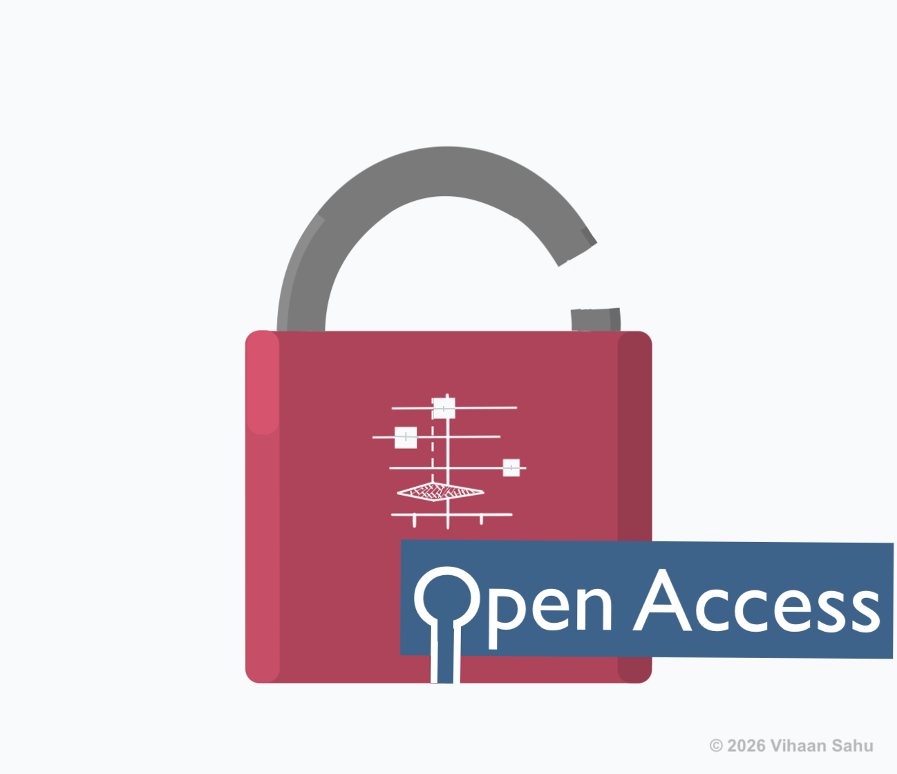

This directory is designed for:
- Systematic review researchers and students
- Meta-analysis practitioners
- Medical and public health researchers
- Librarians and methodologists
- Open science advocates
- Research software developers
The directory covers all major stages of evidence synthesis:
- Search strategy development
- Citation retrieval and deduplication
- AI-assisted screening
- Data extraction and PDF processing
- Risk of Bias assessment and visualization
- Statistical analysis and meta-analysis
- Evidence mapping and bibliometrics
- Automation, scripting, and machine learning
- Qualitative synthesis
Tools range from full platforms to lightweight libraries and utilities.
It includes 289 verified open-source, non-proprietary tools (up to early 2026) covering the full evidence synthesis pipeline.

Why This Matters
Evidence synthesis supports evidence-based medicine, public health, environmental research, and policy. However, current ecosystem has key limitations:
- Many commonly used tools are proprietary or closed-source
- Existing directories often mix software with checklists or guidance documents
- Source code availability and licensing are often unclear
- Limited transparency affects reproducibility
- Open, reusable implementations are difficult to identify
This project provides:
- A strict open-source-only directory
- Verified repositories and licenses
- Software-only inclusion (no mixed content). Checklists and Frameworks are excluded.
- A discovery platform for reusable research software
- Support for Open Science and FAIR principles

Why Open Source?
🚀 This project prioritizes open-source tools to ensure:
- Transparency – Inspect algorithms
- Reproducibility – Avoid black-box systems
- Sustainability – Independence from commercial vendors
- Innovation – Modify and build upon tools
- Equity – Free global access
Technical Design
The website is built using pure HTML to ensure:
- No framework or dependency lock-in
- Long-term stability and preservation
- Easy editing with any text editor
- Low barrier for community contributions
This design prioritizes accessibility, sustainability, and long-term community maintenance.
Novelty and Rationale
Existing directories (e.g., SR Toolbox) often:
- Include proprietary tools
- Mix software with non-software resources
- Lack clear source code or license verification
- Provide limited update transparency
- Do not make platform source code publicly available
This project differs by:
- Enforcing a strict open-source-only policy
- Verifying repositories and licenses
- Maintaining a software-only focus
- Using pure HTML for transparency and easy maintenance
- Supporting discovery, reuse, and extension of research software
For Developers
The repository enables developers to:
- Discover fully open implementations
- Inspect real-world evidence synthesis codebases
- Reuse and extend existing tools
- Build interoperable and transparent solutions aligned with Open Science principles
Support & Contributions
This directory strives to be a comprehensive, transparent resource for research community. Contributions and suggestions are welcome, provided the tools meet the inclusion criteria outlined below.
Inclusion Criteria
- Open Source License: The tool must be released under a recognized open-source license (e.g., MIT, GPL, Apache).
- Public Code Repository: Source code must be publicly accessible (e.g., GitHub, GitLab, Bitbucket).
- Non-Proprietary: The software must be free to use, with no closed-source components or mandatory commercial dependencies.
- Reusable & Extensible: The repository should contain sufficient documentation to allow reuse, extension, and community-driven development.
- Research-Focused: The tool should be relevant to evidence synthesis, systematic reviews, meta-analysis, or closely related workflows.
External API Dependency Policy
- The software uses an OSI-approved open-source license.
- The full source code is publicly available (e.g., GitHub, GitLab).
- The tool’score functionality is transparent and reusable.
- The external service is usedonly for data access or integration,not hidden proprietary logic.
Some open-source tools interact with external databases, platforms, or APIs (e.g., literature databases or screening systems). These tools are eligible for inclusion if the software itself is fully open source, has a public code repository, and can be reused or extended.
Tools that rely on external APIs are acceptable if:
Such tools are also documented in the directory.
Submit a tool via:
Note: Tools that are free but closed-source, freemium, or require institutional licenses are not considered. Software or tools whose source code are hosted exclusively on university or institutional websites are excluded due to concerns regarding limited accessibility, long-term stability, and the lack of sustained public availability.
🌟 Citation
Note: The complete source code, along with the full software list and detailed metadata, is archived on Zenodo. Individual tools retain their original citations.
Built for the research community to advance open, transparent, and reproducible evidence synthesis 🌐